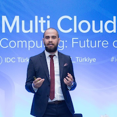

PYRK8S Bootcamp - Istanbul
IBM
Levent Mahallesi., Büyükdere Cd. Yapi Kredi Plaza B Blok, 34330 Beşiktaş/İstanbul
Map

Nov 11 - 15
Objective for F2F Training
-
Apply the vendor-agnostic principles from the virtual training to IBM (and Red Hat) Kubernetes solutions.
-
Using this knowledge, attendees will create a MVP project and team to execute that project remotely.
Agenda
-
The agenda is spread over 5 days onsite.
-
During the face to face training teams will discuss and architect an MVP solution which will be executed later.
Presentations
Hands on Activities
This bootcamp contains significant hands on learning.
From the navigation menu, select the Daily Agenda and Activities item to view the daily agenda.
There, you will also find the links to the hands-on lab guides and Skytap environments that are used for that specific day.
Instructors
| Name | Title | |
|---|---|---|
| Eswara Kosaraju | WW Technical Sales | |
| Gökhan Yilmaz | Hybrid Cloud Technical Sales Specialist | |
|  | Ozan Güzeldereli | Cloud Integration Architect |